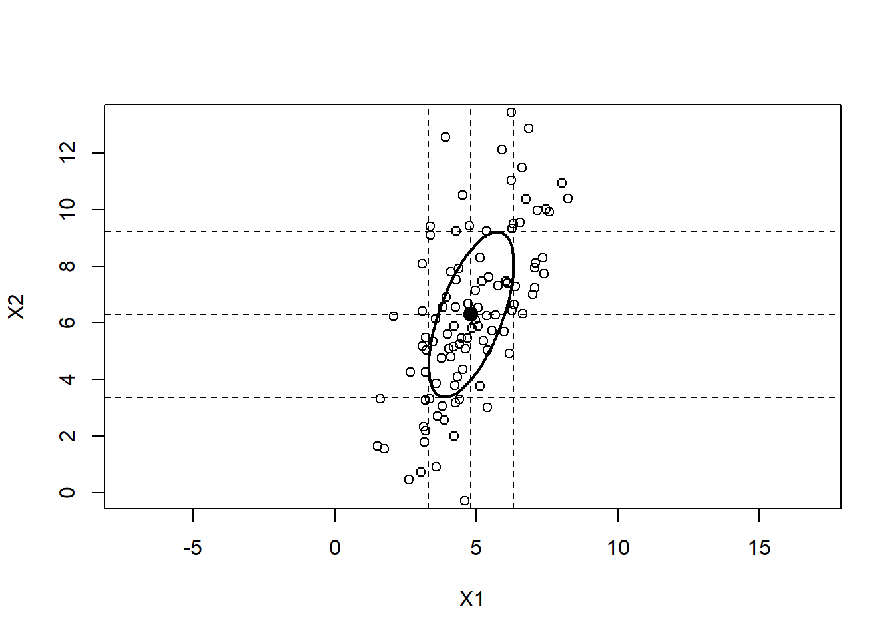

Chapter 16 Primer Math
This document shows how to work out the numerical examples (and some of the symbolic examples) in A Mathematical Primer for Social Statistics, Second Edition [@Fox2020] in the R statistical computing environment [@RCore2020].
16.1 A Note on Computer Arithmetric
Like most numerically oriented computer software, non-integer real numbers in R are represented as double-precision floating point numbers to approximately 16 decimal-digit accuracy. Computations can accumulate rounding errors that produce substantially less accuracy in a final result, and performing a computation in theoretically equivalent but non-identical manners can yield slightly different results—or, in pathological cases, dramatically different and even incorrect results. As a consequence, it is generally a bad idea to test that a number resulting from a computation is precisely equal to a particular value (like zero) or to test that two theoretically equal numbers resulting from different computations are exactly equal.
Consider the following example: Basic trigonometric functions are reviewed in Section 3.1.5 of the text. As is apparent in the following graph (similar to Figure 3.7 in the text), \(\cos(x) = \sin(x + 90)\), where the angle \(x\) is measured in degrees:
curve(sin, 0, 2*pi, ann=FALSE, axes=FALSE, lwd=2)
axis(1, pos=0, at=c(0, pi/2, pi, 3*pi/2, 2*pi),
labels=c(expression(0*degree), expression(90*degree),
expression(180*degree), expression(270*degree),
expression(360*degree)))
axis(2, pos=0)
curve(cos, add=TRUE, lty="dashed", lwd=2)
legend(pi, 1, lty=1:2, lwd=2, legend=c("sine", "cosine"), bty="n")The trigonometric functions in R measure angles in radians (as is reflected in the R code for the graph), and remembering that \(90^\circ = \pi/2\) radians, in radian measure \(\cos(x) = \sin(x + \pi/2)\). Let’s see what happens when we translate this equation into R code for several angles between zero and \(\pi\) radian:
## [1] 0.0000000 0.6283185 1.2566371 1.8849556 2.5132741 3.1415927## [1] 1.000000 0.809017 0.309017 -0.309017 -0.809017 -1.000000## [1] 1.000000 0.809017 0.309017 -0.309017 -0.809017 -1.000000## [1] FALSE## [1] 0.000000e+00 0.000000e+00 -5.551115e-17 -5.551115e-17 0.000000e+00
## [6] 0.000000e+00To the precision that numbers are printed by default in R, cos(angles) and sin(angles + pi/2) appear to produce the same results, as we might naively expect. But if we test for equality or subtract one result from the other, we see that they are not identical: Two of the pairs of numbers differ by a very small amount, about \(6 \times 10^{-17}\). Recall that real numbers in R are represented to about 16 decimal places of precision.
16.2 Chapter 1. Matrices, Linear Algebra, and Vector Geometry: The Basics
16.3 Basic Matrix Arithmetic
Matrix addition, subtraction, negation, and transposition:
## [,1] [,2] [,3]
## [1,] 1 2 3
## [2,] 4 5 6## [,1] [,2] [,3]
## [1,] -5 1 2
## [2,] 3 0 -4## [,1] [,2] [,3]
## [1,] -4 3 5
## [2,] 7 5 2## [,1] [,2] [,3]
## [1,] 6 1 1
## [2,] 1 5 10## [,1] [,2] [,3]
## [1,] 5 -1 -2
## [2,] -3 0 4## [,1] [,2]
## [1,] 1 4
## [2,] 2 5
## [3,] 3 6Product of a matrix and a scalar:
## [,1] [,2] [,3]
## [1,] -15 3 6
## [2,] 9 0 -12Inner product of two vectors:
## [,1]
## [1,] 25Note the following:
- There is usually no need in R to define a vector as a row vector (i.e, a one-row matrix) or a column vector (a one-column matrix), although one may do so.
- The inner-product operator
%*%produces a \((1 \times 1)\) matrix as a result rather than a true scalar. In fact, there are no true scalars in R–the simplest data structure is a one-element vector. As shown below, the inner-product operator is also used for matrix multiplication.
Examples of matrix products:
## [,1] [,2] [,3]
## [1,] 1 2 3
## [2,] 4 5 6## [,1] [,2] [,3]
## [1,] 1 0 0
## [2,] 0 1 0
## [3,] 0 0 1## [,1] [,2] [,3]
## [1,] 1 2 3
## [2,] 4 5 6## [,1] [,2]
## [1,] 1 2
## [2,] 3 4## [,1] [,2]
## [1,] 0 3
## [2,] 2 1## [,1] [,2]
## [1,] 4 5
## [2,] 8 13## [,1] [,2]
## [1,] 9 12
## [2,] 5 8## [,1] [,2]
## [1,] 2 0
## [2,] 0 3## [,1] [,2]
## [1,] 0.5 0.0000000
## [2,] 0.0 0.3333333## [,1] [,2]
## [1,] 1 0
## [2,] 0 1## [,1] [,2]
## [1,] 1 0
## [2,] 0 116.4 Matrix Inversion
The matrix inverse:
## [,1] [,2]
## [1,] 2 5
## [2,] 1 3## [,1] [,2]
## [1,] 3 -5
## [2,] -1 2## [,1] [,2]
## [1,] 1 0
## [2,] 0 1## [,1] [,2]
## [1,] 1 0
## [2,] 0 1Finding a matrix inverse by Gaussian elimination:
## Warning: package 'matlib' was built under R version 4.0.3## [,1] [,2] [,3]
## [1,] 2 -2 0
## [2,] 1 -1 1
## [3,] 4 4 -4##
## Initial matrix:
## [,1] [,2] [,3] [,4] [,5] [,6]
## [1,] 2 -2 0 1 0 0
## [2,] 1 -1 1 0 1 0
## [3,] 4 4 -4 0 0 1
##
## row: 1
##
## exchange rows 1 and 3
## [,1] [,2] [,3] [,4] [,5] [,6]
## [1,] 4 4 -4 0 0 1
## [2,] 1 -1 1 0 1 0
## [3,] 2 -2 0 1 0 0
##
## multiply row 1 by 1/4
## [,1] [,2] [,3] [,4] [,5] [,6]
## [1,] 1 1 -1 0 0 1/4
## [2,] 1 -1 1 0 1 0
## [3,] 2 -2 0 1 0 0
##
## subtract row 1 from row 2
## [,1] [,2] [,3] [,4] [,5] [,6]
## [1,] 1 1 -1 0 0 1/4
## [2,] 0 -2 2 0 1 -1/4
## [3,] 2 -2 0 1 0 0
##
## multiply row 1 by 2 and subtract from row 3
## [,1] [,2] [,3] [,4] [,5] [,6]
## [1,] 1 1 -1 0 0 1/4
## [2,] 0 -2 2 0 1 -1/4
## [3,] 0 -4 2 1 0 -1/2
##
## row: 2
##
## exchange rows 2 and 3
## [,1] [,2] [,3] [,4] [,5] [,6]
## [1,] 1 1 -1 0 0 1/4
## [2,] 0 -4 2 1 0 -1/2
## [3,] 0 -2 2 0 1 -1/4
##
## multiply row 2 by -1/4
## [,1] [,2] [,3] [,4] [,5] [,6]
## [1,] 1 1 -1 0 0 1/4
## [2,] 0 1 -1/2 -1/4 0 1/8
## [3,] 0 -2 2 0 1 -1/4
##
## subtract row 2 from row 1
## [,1] [,2] [,3] [,4] [,5] [,6]
## [1,] 1 0 -1/2 1/4 0 1/8
## [2,] 0 1 -1/2 -1/4 0 1/8
## [3,] 0 -2 2 0 1 -1/4
##
## multiply row 2 by 2 and add to row 3
## [,1] [,2] [,3] [,4] [,5] [,6]
## [1,] 1 0 -1/2 1/4 0 1/8
## [2,] 0 1 -1/2 -1/4 0 1/8
## [3,] 0 0 1 -1/2 1 0
##
## row: 3
##
## multiply row 3 by 1/2 and add to row 1
## [,1] [,2] [,3] [,4] [,5] [,6]
## [1,] 1 0 0 0 1/2 1/8
## [2,] 0 1 -1/2 -1/4 0 1/8
## [3,] 0 0 1 -1/2 1 0
##
## multiply row 3 by 1/2 and add to row 2
## [,1] [,2] [,3] [,4] [,5] [,6]
## [1,] 1 0 0 0 1/2 1/8
## [2,] 0 1 0 -1/2 1/2 1/8
## [3,] 0 0 1 -1/2 1 0## [,1] [,2] [,3]
## [1,] 0.0 0.5 0.125
## [2,] -0.5 0.5 0.125
## [3,] -0.5 1.0 0.000## [,1] [,2] [,3]
## [1,] 1 0 0
## [2,] 0 1 0
## [3,] 0 0 1## [,1] [,2] [,3]
## [1,] 1 0 0
## [2,] 0 1 0
## [3,] 0 0 1Notes:
- The steps aren’t identical to those in the text because the
gaussianElimination()function uses a maximum-pivot strategy to increase numerical accuracy: In processing each row, the function selects the largest absolute element in the pivot column at or below the current row and brings it into the pivot position, performing a row interchange if necessary. The object is still to reduce the original matrix (here,A) to the identity matrix. - The determinant is still the product of the pivots, \(4 \times -4 \times 1 = -16\), without changing the sign because there is an even number (2) of row interchanges.
- The standard R
solve()anddet()functions compute the matrix inverse and determinant, respectively, more efficiently and potentially more accurately:
## [,1] [,2] [,3]
## [1,] 0.0 0.5 0.125
## [2,] -0.5 0.5 0.125
## [3,] -0.5 1.0 0.000## [1] -1616.5 Geometric Vectors
Some vectors in 2D space:
X <- matrix(c(-1, 1,
1, 2,
3,-1,
-2,-2),
4, 2, byrow=TRUE)
rownames(X) <- c("(-1, 1)'", "(1, 2)'", "(3, -1)'", "(-2, -2)'")
plot(c(-2, 3.5), c(-2.5, 2.5), type="n",
xlab=expression(x[1]), ylab=expression(x[2]), asp=1)
abline(v=0, h=0, col="gray")
vectors(X, cex=0.8)
Setting asp=1 (for “aspect ratio”) specifies that the scales of the two axes are the same units per cm, insuring that the lengths of the vectors are correct.
The matlib package can also draw vectors in 3D space (see ?vectors3d), but it is more complicated to generate the 3D examples in the text.
The parallelogram rule of vector addition:
X <- matrix(c(1,-2,
2, 3,
3, 1),
3, 2, byrow=TRUE)
rownames(X) <- c("(1, -2)'", "(2, 3)'", "(3, 1)'")
plot(c(0, 3), c(-2, 3), type="n",
xlab=expression(x[1]), ylab=expression(x[2]), asp=1)
abline(v=0, h=0, col="gray")
vectors(X, cex=0.8)
segments(x0=c(2, 1), x1=c(3, 3), y0=c(3, -2), y1=c(1, 1))The product of a scalar and a vector:
16.6 Solution of Systems of Linear Simultaneous Equations
Putting a matrix in reduced row-echelon form (RREF) by Gaussian elimination:
A <- matrix(c(-2, 0,-1, 2,
4, 0, 1, 0,
6, 0, 1, 2),
3, 4, byrow=TRUE)
gaussianElimination(A, verbose=TRUE, fractions=TRUE)##
## Initial matrix:
## [,1] [,2] [,3] [,4]
## [1,] -2 0 -1 2
## [2,] 4 0 1 0
## [3,] 6 0 1 2
##
## row: 1
##
## exchange rows 1 and 3
## [,1] [,2] [,3] [,4]
## [1,] 6 0 1 2
## [2,] 4 0 1 0
## [3,] -2 0 -1 2
##
## multiply row 1 by 1/6
## [,1] [,2] [,3] [,4]
## [1,] 1 0 1/6 1/3
## [2,] 4 0 1 0
## [3,] -2 0 -1 2
##
## multiply row 1 by 4 and subtract from row 2
## [,1] [,2] [,3] [,4]
## [1,] 1 0 1/6 1/3
## [2,] 0 0 1/3 -4/3
## [3,] -2 0 -1 2
##
## multiply row 1 by 2 and add to row 3
## [,1] [,2] [,3] [,4]
## [1,] 1 0 1/6 1/3
## [2,] 0 0 1/3 -4/3
## [3,] 0 0 -2/3 8/3
##
## row: 2
##
## exchange rows 2 and 3
## [,1] [,2] [,3] [,4]
## [1,] 1 0 1/6 1/3
## [2,] 0 0 -2/3 8/3
## [3,] 0 0 1/3 -4/3
##
## multiply row 2 by -3/2
## [,1] [,2] [,3] [,4]
## [1,] 1 0 1/6 1/3
## [2,] 0 0 1 -4
## [3,] 0 0 1/3 -4/3
##
## multiply row 2 by 1/6 and subtract from row 1
## [,1] [,2] [,3] [,4]
## [1,] 1 0 0 1
## [2,] 0 0 1 -4
## [3,] 0 0 1/3 -4/3
##
## multiply row 2 by 1/3 and subtract from row 3
## [,1] [,2] [,3] [,4]
## [1,] 1 0 0 1
## [2,] 0 0 1 -4
## [3,] 0 0 0 0
##
## row: 3Note: Once again, the steps aren’t identical to those in the text because gaussianElimination() uses a maximum pivot strategy, but the resulting RREF of the matrix is the same.
Solving systems of linear simultaneous equations:
- An underidentified system of equations: \[ \begin{bmatrix*}[r] -2 & 0 & -1 & 2 \\ 4 & 0 & 1 & 0 \\ 6 & 0 & 1 & 2 \end{bmatrix*} \begin{bmatrix} x_1 \\ x_2 \\ x_3 \\ x_4 \end{bmatrix} = \begin{bmatrix} 1 \\ 2 \\ 5 \end{bmatrix} \]
##
## Initial matrix:
## [,1] [,2] [,3] [,4] [,5]
## [1,] -2 0 -1 2 1
## [2,] 4 0 1 0 2
## [3,] 6 0 1 2 5
##
## row: 1
##
## exchange rows 1 and 3
## [,1] [,2] [,3] [,4] [,5]
## [1,] 6 0 1 2 5
## [2,] 4 0 1 0 2
## [3,] -2 0 -1 2 1
##
## multiply row 1 by 1/6
## [,1] [,2] [,3] [,4] [,5]
## [1,] 1 0 1/6 1/3 5/6
## [2,] 4 0 1 0 2
## [3,] -2 0 -1 2 1
##
## multiply row 1 by 4 and subtract from row 2
## [,1] [,2] [,3] [,4] [,5]
## [1,] 1 0 1/6 1/3 5/6
## [2,] 0 0 1/3 -4/3 -4/3
## [3,] -2 0 -1 2 1
##
## multiply row 1 by 2 and add to row 3
## [,1] [,2] [,3] [,4] [,5]
## [1,] 1 0 1/6 1/3 5/6
## [2,] 0 0 1/3 -4/3 -4/3
## [3,] 0 0 -2/3 8/3 8/3
##
## row: 2
##
## exchange rows 2 and 3
## [,1] [,2] [,3] [,4] [,5]
## [1,] 1 0 1/6 1/3 5/6
## [2,] 0 0 -2/3 8/3 8/3
## [3,] 0 0 1/3 -4/3 -4/3
##
## multiply row 2 by -3/2
## [,1] [,2] [,3] [,4] [,5]
## [1,] 1 0 1/6 1/3 5/6
## [2,] 0 0 1 -4 -4
## [3,] 0 0 1/3 -4/3 -4/3
##
## multiply row 2 by 1/6 and subtract from row 1
## [,1] [,2] [,3] [,4] [,5]
## [1,] 1 0 0 1 3/2
## [2,] 0 0 1 -4 -4
## [3,] 0 0 1/3 -4/3 -4/3
##
## multiply row 2 by 1/3 and subtract from row 3
## [,1] [,2] [,3] [,4] [,5]
## [1,] 1 0 0 1 3/2
## [2,] 0 0 1 -4 -4
## [3,] 0 0 0 0 0
##
## row: 3Once more, the steps are different from those in the text, but the result is the same, implying that \(x_1 = 3/2 - x_4\) and \(x_3 = -4 +4x_4\).
- An overdetermined system: \[ \begin{bmatrix*}[r] -2 & 0 & -1 & 2 \\ 4 & 0 & 1 & 0 \\ 6 & 0 & 1 & 2 \end{bmatrix*} \begin{bmatrix} x_1 \\ x_2 \\ x_3 \\ x_4 \end{bmatrix} = \begin{bmatrix} 1 \\ 2 \\ 1 \end{bmatrix} \]
##
## Initial matrix:
## [,1] [,2] [,3] [,4] [,5]
## [1,] -2 0 -1 2 1
## [2,] 4 0 1 0 2
## [3,] 6 0 1 2 1
##
## row: 1
##
## exchange rows 1 and 3
## [,1] [,2] [,3] [,4] [,5]
## [1,] 6 0 1 2 1
## [2,] 4 0 1 0 2
## [3,] -2 0 -1 2 1
##
## multiply row 1 by 1/6
## [,1] [,2] [,3] [,4] [,5]
## [1,] 1 0 1/6 1/3 1/6
## [2,] 4 0 1 0 2
## [3,] -2 0 -1 2 1
##
## multiply row 1 by 4 and subtract from row 2
## [,1] [,2] [,3] [,4] [,5]
## [1,] 1 0 1/6 1/3 1/6
## [2,] 0 0 1/3 -4/3 4/3
## [3,] -2 0 -1 2 1
##
## multiply row 1 by 2 and add to row 3
## [,1] [,2] [,3] [,4] [,5]
## [1,] 1 0 1/6 1/3 1/6
## [2,] 0 0 1/3 -4/3 4/3
## [3,] 0 0 -2/3 8/3 4/3
##
## row: 2
##
## exchange rows 2 and 3
## [,1] [,2] [,3] [,4] [,5]
## [1,] 1 0 1/6 1/3 1/6
## [2,] 0 0 -2/3 8/3 4/3
## [3,] 0 0 1/3 -4/3 4/3
##
## multiply row 2 by -3/2
## [,1] [,2] [,3] [,4] [,5]
## [1,] 1 0 1/6 1/3 1/6
## [2,] 0 0 1 -4 -2
## [3,] 0 0 1/3 -4/3 4/3
##
## multiply row 2 by 1/6 and subtract from row 1
## [,1] [,2] [,3] [,4] [,5]
## [1,] 1 0 0 1 1/2
## [2,] 0 0 1 -4 -2
## [3,] 0 0 1/3 -4/3 4/3
##
## multiply row 2 by 1/3 and subtract from row 3
## [,1] [,2] [,3] [,4] [,5]
## [1,] 1 0 0 1 1/2
## [2,] 0 0 1 -4 -2
## [3,] 0 0 0 0 2
##
## row: 3The last row of the result reveals the contradiction, that is, \(0x_1 + 0x_2 + 0x_3 + 0x_4 = 2\).
The standard R solve() function may be used to solve systems of linear equations with equal numbers of equations and unknowns so long as the coefficient matrix is nonsingular.
16.7 Generalized Inverses
The Ginv() function in the matlib package computes generalized inverses using Gaussian elimination. For example, for a the rectangular matrix A:
## [,1] [,2] [,3] [,4]
## [1,] -2 0 -1 2
## [2,] 4 0 1 0
## [3,] 6 0 1 2##
## Initial matrix:
## [,1] [,2] [,3] [,4] [,5] [,6] [,7]
## [1,] -2 0 -1 2 1 0 0
## [2,] 4 0 1 0 0 1 0
## [3,] 6 0 1 2 0 0 1
##
## row: 1
##
## exchange rows 1 and 3
## [,1] [,2] [,3] [,4] [,5] [,6] [,7]
## [1,] 6 0 1 2 0 0 1
## [2,] 4 0 1 0 0 1 0
## [3,] -2 0 -1 2 1 0 0
##
## multiply row 1 by 1/6
## [,1] [,2] [,3] [,4] [,5] [,6] [,7]
## [1,] 1 0 1/6 1/3 0 0 1/6
## [2,] 4 0 1 0 0 1 0
## [3,] -2 0 -1 2 1 0 0
##
## multiply row 1 by 4 and subtract from row 2
## [,1] [,2] [,3] [,4] [,5] [,6] [,7]
## [1,] 1 0 1/6 1/3 0 0 1/6
## [2,] 0 0 1/3 -4/3 0 1 -2/3
## [3,] -2 0 -1 2 1 0 0
##
## multiply row 1 by 2 and add to row 3
## [,1] [,2] [,3] [,4] [,5] [,6] [,7]
## [1,] 1 0 1/6 1/3 0 0 1/6
## [2,] 0 0 1/3 -4/3 0 1 -2/3
## [3,] 0 0 -2/3 8/3 1 0 1/3
##
## row: 2
##
## exchange rows 2 and 3
## [,1] [,2] [,3] [,4] [,5] [,6] [,7]
## [1,] 1 0 1/6 1/3 0 0 1/6
## [2,] 0 0 -2/3 8/3 1 0 1/3
## [3,] 0 0 1/3 -4/3 0 1 -2/3
##
## multiply row 2 by -3/2
## [,1] [,2] [,3] [,4] [,5] [,6] [,7]
## [1,] 1 0 1/6 1/3 0 0 1/6
## [2,] 0 0 1 -4 -3/2 0 -1/2
## [3,] 0 0 1/3 -4/3 0 1 -2/3
##
## multiply row 2 by 1/6 and subtract from row 1
## [,1] [,2] [,3] [,4] [,5] [,6] [,7]
## [1,] 1 0 0 1 1/4 0 1/4
## [2,] 0 0 1 -4 -3/2 0 -1/2
## [3,] 0 0 1/3 -4/3 0 1 -2/3
##
## multiply row 2 by 1/3 and subtract from row 3
## [,1] [,2] [,3] [,4] [,5] [,6] [,7]
## [1,] 1 0 0 1 1/4 0 1/4
## [2,] 0 0 1 -4 -3/2 0 -1/2
## [3,] 0 0 0 0 1/2 1 -1/2
##
## row: 3
##
## Initial matrix:
## [,1] [,2] [,3] [,4] [,5] [,6] [,7]
## [1,] 1 0 0 1 0 0 0
## [2,] 0 0 0 0 1 0 0
## [3,] 0 1 0 0 0 1 0
## [4,] 1 -4 0 0 0 0 1
##
## row: 1
##
## subtract row 1 from row 4
## [,1] [,2] [,3] [,4] [,5] [,6] [,7]
## [1,] 1 0 0 1 0 0 0
## [2,] 0 0 0 0 1 0 0
## [3,] 0 1 0 0 0 1 0
## [4,] 0 -4 0 -1 0 0 1
##
## row: 2
##
## exchange rows 2 and 4
## [,1] [,2] [,3] [,4] [,5] [,6] [,7]
## [1,] 1 0 0 1 0 0 0
## [2,] 0 -4 0 -1 0 0 1
## [3,] 0 1 0 0 0 1 0
## [4,] 0 0 0 0 1 0 0
##
## multiply row 2 by -1/4
## [,1] [,2] [,3] [,4] [,5] [,6] [,7]
## [1,] 1 0 0 1 0 0 0
## [2,] 0 1 0 1/4 0 0 -1/4
## [3,] 0 1 0 0 0 1 0
## [4,] 0 0 0 0 1 0 0
##
## subtract row 2 from row 3
## [,1] [,2] [,3] [,4] [,5] [,6] [,7]
## [1,] 1 0 0 1 0 0 0
## [2,] 0 1 0 1/4 0 0 -1/4
## [3,] 0 0 0 -1/4 0 1 1/4
## [4,] 0 0 0 0 1 0 0
##
## row: 3## [,1] [,2] [,3]
## [1,] -1/8 0 1/8
## [2,] 0 0 0
## [3,] 0 0 0
## [4,] 3/8 0 1/8## [,1] [,2] [,3] [,4]
## [1,] -2 0 -1 2
## [2,] 4 0 1 0
## [3,] 6 0 1 2Notes:
- Because it uses a maximum-pivot strategy, the procedure implemented by
Ginv()is slightly different from that described in the text, and it produces a different generalized inverse for this example. In the steps enumerated in the verbose output,Ginv()first transforms the matrixAto RREF after sticking an identity matrix on the right, and then rather than performing elementary column operations, it does the equivalent by transposing the RREF of A and reducing that to RREF, once again sticking an identity matrix on the right. - Let \(\mathbf{E}\) contain the columns originally pertaining to the identity matrix after
Ais transformed to RREF; and let \(\mathbf{E^*}\) contain the transposed rows originally pertaining to the identity matrix after the transpose of the RREF ofAis itself reduced to RREF, the transpose of which is the canonical form ofA, \(\mathbf{A}_C\). Then the generalized inverse returned byGinv()is \(\mathbf{E^*} \mathbf{A}_C \mathbf{E}\).
The ginv() function in the MASS package, which is part of the standard R distribution, computes the Moore-Penrose generalized inverse, and is also more efficient and potentially more accurate than Ginv():
## [,1] [,2] [,3]
## [1,] -13/216 2/27 19/216
## [2,] 0 0 0
## [3,] -5/54 1/27 -1/54
## [4,] 67/216 -2/27 35/216## [,1] [,2] [,3] [,4]
## [1,] -2 0 -1 2
## [2,] 4 0 1 0
## [3,] 6 0 1 2## [,1] [,2] [,3]
## [1,] -13/216 2/27 19/216
## [2,] 0 0 0
## [3,] -5/54 1/27 -1/54
## [4,] 67/216 -2/27 35/216## [,1] [,2] [,3]
## [1,] 5/6 -1/3 1/6
## [2,] -1/3 1/3 1/3
## [3,] 1/6 1/3 5/6## [,1] [,2] [,3] [,4]
## [1,] 17/18 0 2/9 1/18
## [2,] 0 0 0 0
## [3,] 2/9 0 1/9 -2/9
## [4,] 1/18 0 -2/9 17/18The zapsmall() function rounds very small numbers to zero.
16.8 Chapter 2: Matrix Decompositions and Quadratic Forms
16.9 Eigenvalues and Eigenvectors
The Eigen() function in the matlib package computes eigenvalues and normalized eigenvectors of square symmetric matrices using the iterated QR decomposition (as described in Section 2.3.1 of the text). In contrast to the standard-R eigen() function, Eigen() is implemented purely in R code and therefore can easily be inspected by the user. Both functions return lists with elements giving eigenvalues and normalized eigenvectors. For example:
## [,1] [,2]
## [1,] 1.0 0.5
## [2,] 0.5 1.0## eigen() decomposition
## $values
## [1] 1.5 0.5
##
## $vectors
## [,1] [,2]
## [1,] 0.7071068 -0.7071068
## [2,] 0.7071068 0.7071068## $values
## [1] 1.5 0.5
##
## $vectors
## [,1] [,2]
## [1,] -0.7071068 0.7071068
## [2,] -0.7071068 -0.7071068## [,1] [,2]
## [1,] 1.0 0.5
## [2,] 0.5 1.0## [,1] [,2]
## [1,] 1.0 0.5
## [2,] 0.5 1.0The two functions return similar results, with the eigenvectors produced by Eigen() the reflection of those produced by eigen(). Recall that normalized eigenvalues are defined uniquely up to a change in sign.
16.10 The Cholesky Decomposition
Similarly, the cholesky() function in the matlib package and the standard-R chol function compute the Cholesky decomposition of a square symmetric matrix, the former using pure R code. Demosntrating with the example given in the text:
## [,1] [,2] [,3]
## [1,] 1.0 0.5 0.3
## [2,] 0.5 1.0 0.5
## [3,] 0.3 0.5 1.0## [,1] [,2] [,3]
## [1,] 1.0 0.0000000 0.0000000
## [2,] 0.5 0.8660254 0.0000000
## [3,] 0.3 0.4041452 0.8640988## [,1] [,2] [,3]
## [1,] 1 0.5000000 0.3000000
## [2,] 0 0.8660254 0.4041452
## [3,] 0 0.0000000 0.8640988## [,1] [,2] [,3]
## [1,] 1.0 0.5 0.3
## [2,] 0.5 1.0 0.5
## [3,] 0.3 0.5 1.0## [,1] [,2] [,3]
## [1,] 1.0 0.5 0.3
## [2,] 0.5 1.0 0.5
## [3,] 0.3 0.5 1.0The functions differ in that chol() returns the upper-triangular Cholesky factor (as in the text), while cholesky() returns the lower-triangular Cholesky factor.
16.11 The QR Decomposition
The QR() function in the matlib package once again is a pure-R implementation of a standard-R function, qr(), and as their names imply, both functions compute the QR factorization of a rectangular matrix. QR() returns a list with the Q and R components and the rank of the matrix. The object returned by qr() is more complicated, but the Q and R components can be computed from it. Using the illustrative matrix in the text:
## [,1] [,2] [,3]
## [1,] 1 1 2
## [2,] 1 1 4
## [3,] 1 0 6
## [4,] 1 0 8## $Q
## [,1] [,2] [,3]
## [1,] -0.5 -0.5 0.5
## [2,] -0.5 -0.5 -0.5
## [3,] -0.5 0.5 0.5
## [4,] -0.5 0.5 -0.5
##
## $R
## [,1] [,2] [,3]
## [1,] -2 -1 -10
## [2,] 0 -1 4
## [3,] 0 0 -2
##
## $rank
## [1] 3## [,1] [,2] [,3]
## [1,] 1 1 2
## [2,] 1 1 4
## [3,] 1 0 6
## [4,] 1 0 8## [1] "qr" "rank" "qraux" "pivot"## [1] 3## [,1] [,2] [,3]
## [1,] -0.5 -0.5 0.5
## [2,] -0.5 -0.5 -0.5
## [3,] -0.5 0.5 0.5
## [4,] -0.5 0.5 -0.5## [,1] [,2] [,3]
## [1,] -2 -1 -10
## [2,] 0 -1 4
## [3,] 0 0 -216.12 Chapter 3. An Introduction to Calculus
As mentioned, the standard R distribution has limited facilities for symbolic mathematics, including calculus. Although there are contributed R packages on CRAN that link R to open-source symbolic algebra systems [for example, the **Ryacas** package, @AndersenHojsgaard2019, which interfaces R to the *yacas* symbolic algebra system], these aren’t very easy to use. In contrast, the contributed mosaicCalc package modestly augments the symbolic math capabilities of R, and I’ll focus on this package here.
The D() function the mosaicCalc package is capable of finding derivatives and partial derivatives for all of the examples presented in the text, which the slight caveat that D() doesn’t simplify the resulting expressions. There is also a somewhat less convenient D() function for differentiation in the standard R distribution that D() in mosaicCalc ‘masks’ (i.e., hides). For example, for \(y = f(x) = x^2\).
## Warning: package 'mosaicCalc' was built under R version 4.0.4## Loading required package: mosaicCore## Registered S3 method overwritten by 'mosaic':
## method from
## fortify.SpatialPolygonsDataFrame ggplot2##
## Attaching package: 'mosaicCalc'## The following object is masked from 'package:stats':
##
## D## function (x)
## 2 * xThe argument to D() is a formula, where left-hand side (i.e., the component to the left of the tilde, ~) is the function to be differentiated, here x^2, and the right-hand side is the independent variable, x. The result is an R function, which may be used to compute the derivative for specific values of the independent variable; for example,
## [1] 2 4 6returns the value of \(dy/dx = 2x\) for \(x = 1, 2\), and 3.
The other derivative examples in the text are evaluated as follows:
- \(f(x) = 3x^6\)
## function (x)
## 3 * (6 * x^5)- \(f(x) = \frac{1}{4x^3} = \frac{1}{4} x^{-3}\)
## function (x)
## -((1/4) * (x^-(3 + 1) * 3))- \(f(x) = \sqrt{x} = x^{1/2}\)
## function (x)
## x^((1/2) - 1) * (1/2)- The addition rule, applied to \(f(x) = 2x^2 + 3x + 4\)
## function (x)
## 2 * (2 * x) + 3- The multiplication rule, applied to \(f(x) = (x^2 + 1)(2x^3 - 3x)\)
## function (x)
## 2 * x * (2 * x^3 - 3 * x) + (x^2 + 1) * (2 * (3 * x^2) - 3)- The division rule, applied to \(x/(x^2 - 3*x +5)\)
## function (x)
## 1/(x^2 - 3 * x + 5) - x * (2 * x - 3)/(x^2 - 3 * x + 5)^2- The chain rule, applied to \((x^2 + 3x + 6)^5\)
## function (x)
## 5 * ((2 * x + 3) * (x^2 + 3 * x + 6)^4)- The derivative of the log function, \(f(x) = \log_e(x)\)
## function (x)
## 1/x- The derivative of the the exponential function, \(f(x) = e^x\)
## function (x)
## exp(x)- The derivative of \(f(x) = a^x\)
## function (x, a)
## a^x * log(a)- The derivatives of common trigonometric functions:
## function (x)
## -sin(x)## function (x)
## cos(x)## function (x)
## 1/cos(x)^2Second and higher-order derivatives can be evaluated by specifying the independent variable repeatedly on the right-hand side of the derivative formula (separated by pluses). For example, for \(f(x) = 5x^4 + 3x^2 + 6\):
## function (x)
## 5 * (4 * x^3) + 3 * (2 * x)## function (x)
## 5 * (4 * (3 * x^2)) + 3 * 2## function (x)
## 5 * (4 * (3 * (2 * x)))## function (x)
## 5 * (4 * (3 * 2))## function (x)
## 016.13 Maximization and Minimization
To find extrema of a function, we not only have to differentiate the function but also must set the derivative to zero and solve the resulting equation for its roots. The standard R distribution has two root-finding functions: unitroot(), which will try to find one root of an arbitrary function in a prespecified range of \(x\) values, and polyroot() which locates the roots of a polynomial function.
The example given in the text is a polynomial function, \(f(x) = 2x^3 - 9x^2 + 12x + 6\), and so its derivative is also a polynomial:
## function (x)
## 2 * (3 * x^2) - 9 * (2 * x) + 12The function returned by D() isn’t in the form required by polyroot(), whose argument is the vector of coefficients of the polynomial, \(a_0, a_1, \ldots, a_n\) for a polynomial of degree \(n\). Thus, for the current example:
## [1] 1+0i 2-0ipolyroot() returns the roots of the polynomial as complex numbers. In this case, the imaginary parts of the two roots are both zero, and consequently the roots are real, \(x = 1\) and \(x = 2\). The corresponding \(y\)-values are 11 and 10:
## [1] 11 10To figure out whether these values are relative minima, maxima, or neither, let’s find the second derivative of the function and determine whether it’s positive, negative, or zero at the stationary points:
## function (x)
## 2 * (3 * (2 * x)) - 9 * 2## [1] -6 6\(y = 11\) is a relative maximum at \(x = 1\) because \(f''(1) = -6 < 0\), and \(y = 10\) is a relative minimum at \(x = 2\) because \(f''(2) = 6 > 0\).
Finally, let’s draw the function near the minimum and maximum, adding reference lines:
16.14 Partial Derivatives
Although, as we’ve seen, R has good linear algebra facilities, neither the standard R system nor the mosaicCalc package supports matrix calculus. We can, however, use D() to compute partial derivatives. For example, for the function \(y = f(x_1, x_2) = x_1^2 + 3x_1 x_2^2 + x_2^2\), the partial derivatives with respect to \(x_1\) and \(x_2\) are
## function (x_1, x_2)
## 2 * x_1 + 3 * x_2^2## function (x_2, x_1)
## 3 * x_1 * (2 * x_2) + 3 * x_2^2As before, D() doesn’t simplify the result of \(\partial y/\partial x_2\).
To minimize the function \(f(x_1, x_2) = x_1^2 + x_1 x_2 + x_2^2 + 10\), we find its partial derivatives with respect to \(x_1\) and \(x_2\):
## function (x_1, x_2)
## 2 * x_1 + x_2## function (x_2, x_1)
## x_1 + 2 * x_2We then set the partial derivatives to zero and solve the resulting pair of linear simultaneous equations:
## [,1] [,2]
## [1,] 2 1
## [2,] 1 2## [1] 0 0Thus, there’s a stationary point at \(x_1 = 0, x_2 = 0\), where \(y\) is
## [1] 10We can also use the partial derivatives, saved in the R functions fp1() and fp2(), to find the slopes of the tagent plane to \(f(x_1, x_2)\) above an arbitrary pair of \(x\)-values; for example, for \(x_1 = 1\) and \(x_2 = 2\), the slopes are
## [1] 4## [1] 5Notice that the arguments of fp2() are in the order x_2, x_1.
16.15 Lagrange Multipliers for Constrained Optimization
The Lagrange multiplier example in the text can also be solved straightforwardly because the derivatives produce a linear system of simultaneous equations. Here the object is to minimize \(y = f(x_1, x_2) = x_1^2 + x_2^2\) subject to the constraint \(g(x_1, x_2) = x_1 + x_2 - 1 = 0\). Then \(h(x_1, x_2, \lambda) = x_1^2 + x_2^2 - \lambda(x_1 + x_2 - 1)\). Translating this into R code:
## function (x_1, x_2, lambda)
## 2 * x_1 - lambda## function (x_2, x_1, lambda)
## 2 * x_2 - lambda## function (lambda, x_1, x_2)
## -(x_1 + x_2 - 1)Solving,
## [,1] [,2] [,3]
## [1,] 2 0 -1
## [2,] 0 2 -1
## [3,] -1 -1 0## [1] 0.5 0.5 1.0That is, \(x_1 = 0.5, x_2 = 0.5, \lambda = 1\).
As I mentioned, the mosaicCalc package doesn’t directly support symbolic matrix differential calculus, but it does allow to to find second partial derivatives of functions of more than one independent variable, including cross-derivatives. For example, for the function \(f(x_1, x_2) = x_1^2 + x_1 x_2 + x_2^2 + 10\) considered above, we can find \(\frac{\partial^2 y}{\partial x_1 \partial x_2} = \frac{\partial^2 y}{\partial x_2 \partial x_1}\), \(\frac{\partial^2 y}{\partial x_1^2}\), and \(\frac{\partial^2 y}{\partial x_2^2}\):
## function (x_1, x_2)
## 1## function (x_2, x_1)
## 1## function (x_1, x_2)
## 2## function (x_2, x_1)
## 2For this example, all of the second derivatives are constants, but that is not generally the case.
16.16 Numerical Optimization
The standard R distribution has reasonably good facilities for numerical optimization. See, in particular, optimize() for optimizing a function of a single independent variable, and optim() for optimizing a function of several independent variables. The contributed optimix package [@Nash2014] provides a more extensive suite of optimization tools.
Here is a simple (indeed, simple-minded) minimization function that implements the gradient-descent method described in the text:
minimize <- function(f, df, x0, tol=1e-5, adjust.step=TRUE, verbose=FALSE){
# f: function to be minimized
# df: function for the vector partial derivative (gradient) of f
# x0: vector of starting values for x
# tol: a small positive number to test for convergence,
# to be treated as effectively zero
# adjust.step: if TRUE, adjust the step size if there is no improvement
# verbose: if TRUE, print iteration history
it <- 0L
step <- 1
x <- x0
if (verbose){
cat("\nit =", it," step =", step, " x =", x0,
" f(x) =", f(x0), " f'(x) =", df(x0))
}
while (abs(df(x)) > tol){
it <- it + 1L
x1 <- x - step*fp(x)
if (f(x1) < f(x)){
x <- x1
if (verbose){
cat("\nit =", it," step =", step, " x =", x,
" f(x) =", f(x), " f'(x) =", df(x))
}
if (adjust.step) {
step <- step*2
if (verbose){
cat("\n adjusted (*2) step =", step)
}
}
} else {
step <- step/2
if (verbose){
cat("\n adjusted (/2) step =", step)
}
it <- it - 1L
}
}
# return a list with x at the minimum, the minimum, the gradient at the minimum,
# and the number of iterations required
list(x=x, f=f(x), df=df(x), it=it)
}For example, as in the text, let’s try to minimize \(f(x) = x^4 - 10x^3 + 35x^2 - 50x + 26\). The derivative of this function is
## function (x)
## 4 * x^3 - 10 * (3 * x^2) + 35 * (2 * x) - 50Then using the starting value \(x_0 = 3\),
##
## it = 0 step = 1 x = 3 f(x) = 2 f'(x) = -2
## adjusted (/2) step = 0.5
## adjusted (/2) step = 0.25
## it = 1 step = 0.25 x = 3.5 f(x) = 1.0625 f'(x) = -1
## adjusted (*2) step = 0.5
## adjusted (/2) step = 0.25
## adjusted (/2) step = 0.125
## it = 2 step = 0.125 x = 3.625 f(x) = 1.000244 f'(x) = 0.0703125
## adjusted (*2) step = 0.25
## adjusted (/2) step = 0.125
## it = 3 step = 0.125 x = 3.616211 f(x) = 1.000017 f'(x) = -0.01818595
## adjusted (*2) step = 0.25
## adjusted (/2) step = 0.125
## it = 4 step = 0.125 x = 3.618484 f(x) = 1.000001 f'(x) = 0.004504641
## adjusted (*2) step = 0.25
## adjusted (/2) step = 0.125
## it = 5 step = 0.125 x = 3.617921 f(x) = 1 f'(x) = -0.001128709
## adjusted (*2) step = 0.25
## adjusted (/2) step = 0.125
## it = 6 step = 0.125 x = 3.618062 f(x) = 1 f'(x) = 0.0002820169
## adjusted (*2) step = 0.25
## adjusted (/2) step = 0.125
## it = 7 step = 0.125 x = 3.618027 f(x) = 1 f'(x) = -7.051423e-05
## adjusted (*2) step = 0.25
## adjusted (/2) step = 0.125
## it = 8 step = 0.125 x = 3.618036 f(x) = 1 f'(x) = 1.762793e-05
## adjusted (*2) step = 0.25
## adjusted (/2) step = 0.125
## it = 9 step = 0.125 x = 3.618034 f(x) = 1 f'(x) = -4.407022e-06
## adjusted (*2) step = 0.25## $x
## [1] 3.618034
##
## $f
## [1] 1
##
## $df
## [1] -4.407022e-06
##
## $it
## [1] 9The computation converges to the specified tolerance in nine iterations, at which point \(x = 3.618034\) (recall that there is a minimum at \(x \approx 3.6180\)), \(f(x) = 1\), and \(f'(x) = -4.4 \times 10^{-6}\) is within the convergence tolerance of zero.
Even though the example problem has only a single independent variable, minimize(), like the standard R optim() function, will also work for functions of several independent variables. Here is the solution to the problem provided by optim():
## $par
## [1] 3.618012
##
## $value
## [1] 1
##
## $counts
## function gradient
## 13 7
##
## $convergence
## [1] 0
##
## $message
## NULLThat the $convergence element of the result is 0 indicates that the computation converged to within rounding error of the answer.
The first argument to optim() is the starting value \(x_0 = 3\) (more generally, the vector of starting values for the independent variables); the second argument is the function to be minimized; the third argument, gr is the gradient function (here, the second derivative with respect to the single independent variable); and the fourth argument is the name of the optimization method to be used (several are available, see ?optim). The optim() function returns nearly the same answer as minimize(), with a bit more rounding error in this case.
Finally, because the problem has only one independent variable, let’s use the standard R optimize() function, which is typically more accurate for such problems, looking for a minimum in the range (0, 4):
## $minimum
## [1] 1.381954
##
## $objective
## [1] 1Notice that optimize() finds the minimum at \(x \approx 1.3820\) rather than at \(x \approx 3.6180\). To find the latter, we can specify a different range within which to search for the minimum:
## $minimum
## [1] 3.618041
##
## $objective
## [1] 1In each case, the value of the function at the relative minimum, \(y = 1\), is given by the $objective (i.e., objective function) element of the result.
16.17 Integration
The mosaicCalc package includes the antiD() function for symbolic antidifferentiation—that is, finding indefinite integrals. Usage is similar to the D() function. For exammple, to find the antiderivative of the function \(f(x) = x^2 + 3\),
## function (x, C = 0)
## 1/3 * x^3 + 3 * x + CThe function returned (i.e, F()), which can be used in the normal manner to evaluate definite integrals, includes the arbitrary constant of integration C as an additional argument, set to zero by default. For example, to evaluate the definite integral \(\int_1^3 (x^2 + 3)dx\):
## [1] 14.66667The standard R distribution includes the integrate() function for numerical integration of a function of a single independent variable; integrate() works by a more sophisticated version of Figure 3.20 in the text, approximating the area under a function by summing the areas of rectangles (or better, trapezoids) drawn under the function, a method called quadrature. Applied to our example:
## 14.66667 with absolute error < 1.6e-1316.18 Chapter 5. Common Probability Distributions
The standard R installation includes all of the univariate discrete and continuous probability distribution families discussed in this chapter along with the multinomial distribution, but not the multivariate-normal and Wishart distributions, which are, however, available in contributed packages on CRAN (see below for the multivariate-normal distribution). A common naming convention is used for probability functions: Each distributional family is denoted by a base name—for example, “binom” for the binomial family and “norm” for the normal family. The probability-mass or density function for the family begins with the letter “d”—for example, dbinom() is the binomial mass function and dnorm() is the normal density function. Similarly, the quantile function for a family begins with “q” (qbinom(), qnorm()), the cumulative distribution function begins with “p” (pbinom(), pnorm()), and a pseudo-random number generator begins with “r” (rbinom(), rnorm()). The arguments to these functions vary and correspond to the parameters appropriate to each family.
It would be tedious and repetitious to consider all of the probability distributions taken up in the text, and I’ll instead confine my illustrations to the binomial and normal families, along with the multivariate-normal family.
For example, let’s draw a slightly simplified version of Figure 5.1 in the text, for the probability mass function of a binomial random variable with probability of success \(\phi = .7\) and \(n = 10\) binomial trials, where the number of successes \(x\) ranges from zero to 10:
## x p
## [1,] 0 0.0000059049
## [2,] 1 0.0001377810
## [3,] 2 0.0014467005
## [4,] 3 0.0090016920
## [5,] 4 0.0367569090
## [6,] 5 0.1029193452
## [7,] 6 0.2001209490
## [8,] 7 0.2668279320
## [9,] 8 0.2334744405
## [10,] 9 0.1210608210
## [11,] 10 0.0282475249Here are a table and plot of the cumulative distribution function of the same binomial distribution:
## x P
## [1,] 0 0.0000059049
## [2,] 1 0.0001436859
## [3,] 2 0.0015903864
## [4,] 3 0.0105920784
## [5,] 4 0.0473489874
## [6,] 5 0.1502683326
## [7,] 6 0.3503892816
## [8,] 7 0.6172172136
## [9,] 8 0.8506916541
## [10,] 9 0.9717524751
## [11,] 10 1.0000000000The .95 quantile (for example) of the distribution of a discrete random variable \(X\) is defined as the smallest value of \(x\) of \(X\) such that \(\mathrm{Pr}(X \leq x) \geq .95\). For the binomial distribution with \(n = 10\) and \(\phi = .7\), the .95 quantile is
## [1] 9as is readily verified by reference to the cumulative distribution above.
Finally, let’s generate \(N = 1000\) random draws from the binomial distribution with \(n = 10\) and \(\phi = .7\), and then examine the distribution of the sampled values:
## X
## 2 3 4 5 6 7 8 9 10
## 1 10 41 108 197 270 240 108 25plot(2:10, as.vector(counts), type="h", xlab="x", xlim=c(0, 10))
points(2:10, counts, pch=16)
abline(h=0, lty=2)## [1] 6.95## [1] 1.442075The sample mean \(\overline{X} = 6.95\) and standard deviation \(S = 1.442075\) are close to the binomial expectation \(\mu = n\phi = 7\) and \(\sigma = \sqrt{n \phi (1 - \phi)} = \sqrt{10 \times .7 \times .3} = 1.449138\), as one would expect in a sample of size \(N = 1000\). I set the ‘seed’ of R’s pseudo-random number generator to an arbitrary known value so that if you redo my computation, you’ll get exactly the same results, rather than a different sequence of random numbers.
Consider now the normal distribution \(X \sim N(10, 9)\). Let’s plot the density and cumulative distribution functions of \(X\) over the range \(0 \leq X \leq 20\):
x <- seq(0, 20, length=1000)
plot(x, dnorm(x, mean=10, sd=sqrt(9)), type="l", ylab="p(x)", lwd=2)
abline(h=0, lty=2)Next, let’s find the .025 and .975 quantiles of \(X \sim N(10, 9)\):
## [1] 4.120108 15.879892Finally, let’s draw a sample of \(N = 1000\) observations from the distribution, superimposing a nonparametric kernel-density estimate for the sample (produced by the densityPlot() function in the car package) over the theoretical (i.e., population) density function, and calculating the mean and standard deviation of the sample:
## Loading required package: carData##
## Attaching package: 'car'## The following object is masked from 'package:mosaicCore':
##
## logitset.seed(4747834)
X <- rnorm(1000, mean=10, sd=3)
densityPlot(X, method="kernel", col="cyan")
lines(x, dnorm(x, mean=10, sd=3), lwd=2, lty=2, col="magenta")
legend("topleft", inset=0.05, lty=1:2, lwd=2, col=c("cyan", "magenta"),
legend=c("sample", "population"))## [1] 10.0305## [1] 2.823638The short lines at the bottom of the density plot—called a ‘rugplot’ or ‘one-dimensional scatterplot’—show the individual sampled values.
As I mentioned, there are no functions in the standard R distribution for the multivariate-normal distribution, which is, however, supported by the contributed mvtnorm package. For example, we can use the function dmvnorm() from this package to draw a picture of the density function, similar to Figure 5.9 in the text, of the bivariate-normal distribution with expectations \(\mu_1 = 5, \mu_2 = 6\), standard deviations \(\sigma_1 = 1.5, \sigma_2 = 3\), and covariance \(\sigma_{12} = 2.25\):
library("mvtnorm")
library("lattice") # for wireframe()
mu <- c(5, 6)
Sigma <- matrix(c(1.5^2, 2.25, 2.25, 3^2), 2, 2)
x <- seq(0, 12, length=25)
X <- expand.grid(x1=x, x2=x)
X$p <- dmvnorm(X, mean=mu, sigma=Sigma)
head(X)## x1 x2 p
## 1 0.0 0 0.0001466088
## 2 0.5 0 0.0003840338
## 3 1.0 0 0.0008674391
## 4 1.5 0 0.0016895406
## 5 2.0 0 0.0028376470
## 6 2.5 0 0.0041096816## x1 x2 p
## 620 9.5 12 3.840338e-04
## 621 10.0 12 1.466088e-04
## 622 10.5 12 4.826257e-05
## 623 11.0 12 1.370002e-05
## 624 11.5 12 3.353450e-06
## 625 12.0 12 7.078197e-07wireframe(p ~ x1 + x2, data=X, scales=list(arrows=FALSE),
xlab=expression(x[1]), ylab=expression(x[2]),
zlab=list(label=expression(p(x[1], x[2])), rot=90))Some explanation of the R code for this graph is in order: 25 values of x1 and x2 are generated, each ranging from zero to 12. The expand.grid() function forms all \(25 \times 25 = 625\) combinations of values of the two variables, placing these in the data frame X. Then dmvnorm() computes the density, assigned to X$p, at each of the 625 points. Finally, the wireframe() function from the standard R lattice package [@Sarkar2008] draws the 3D graph.
Alternatively, we can use the contourplot() function in the lattice package to draw some of the elliptical contours of the bivariate-normal distribution, using 100 rather than 25 values for each \(x\) to produce a smoother plot:
x <- seq(0, 12, length=100)
X <- expand.grid(x1=x, x2=x)
X$p <- dmvnorm(X, mean=mu, sigma=Sigma)
contourplot(p ~ x1 + x2, data=X, xlab=expression(x[1]), ylab=expression(x[2]), lwd=2,
panel=function(x, y, ...){
panel.contourplot(x, y, ...)
panel.abline(h=6, v=5, lty=2)
panel.points(x=5, y=6, pch=16, cex=1.5, col="black")
})Finally, if we wish to show the standard concentration ellipse or an ellipse drawn to enclose a specific probability (as in Figure 5.10 in the text), it’s convenient to use the ellipse() function in the car package (which was loaded previously):
ellipse(center=mu, shape=Sigma, radius=sqrt(qchisq(.95, 2)), add=FALSE,
xlab=expression(x[1]), ylab=expression(x[2]),
col="black", fill=TRUE, asp=1) # 95% concentration ellipse
ellipse(center=mu, shape=Sigma, radius=1, col="black", fill=TRUE) # standard ellipse
abline(v=c(3.5, 5, 6.5), h=c(3, 6, 9), lty=2)ellipse() takes three required arguments: In the current application, center is the vector of means for \(x_1\) and \(x_2\), shape is their covariance matrix, and radius is the square-root of the value of \((\mathbf{x} - \boldsymbol{\mu})^\prime \boldsymbol{\Sigma}^{-1} (\mathbf{x} - \boldsymbol{\mu})\) defining the ellipse—equal to one for the standard data ellipse and to \(\sqrt{\chi^2_{2, .95}} = 2.448\) for the 95% concentration ellipse. The horizontal and vertical lines on the graph mark the means of the two variables and \(\pm\) one standard deviation around each mean.
16.19 Chapter 6. An Introduction to Statistical Theory
16.20 Central Limit Theorem
Figure 6.3 in the text illustrates the central limit theorem for the sample mean \(\overline{X}\) for samples of size \(n = 1, 2, 5\), and \(25\) drawn from an exponential population with rate parameter \(\lambda = 1\). As explained in the text, the true sampling distribution of the mean from an exponential population is gamma, and the graph shows both the true sampling distribution and the asymptotic normal approximation. It’s easy to draw a version of this graph using dgamma(), the gamma density function, and dnorm(), the approximating normal density:
par(mfrow=c(2, 2))
x<-seq(-2, 6, length=10000)
n <- 1
dg <- n*dgamma(x*n, shape=n)
dg[x < 0] <- NA
dn <- dnorm(x, 1, 1/sqrt(n))
plot(range(x), range(dn, dg, na.rm=TRUE), type="n",
xlab=expression(bar(x)),
ylab=expression(p(bar(x))),
main="(a) n = 1")
lines(x, dg, lwd=2)
lines(x, dn, lwd=2, lty=2)
abline(v=0, h=0)
n <- 2
dg <- n*dgamma(x*n, shape=n)
dg[x < .01] <- NA
dn <- dnorm(x, 1, 1/sqrt(n))
plot(range(x), range(dn, dg, na.rm=TRUE), type="n",
xlab=expression(bar(x)),
ylab=expression(p(bar(x))),
main="(b) n = 2")
lines(x, dg, lwd=2)
lines(x, dn, lwd=2, lty=2)
abline(v=0, h=0)
n <- 5
dg <- n*dgamma(x*n, shape=n)
dg[x < .01] <- NA
dn <- dnorm(x, 1, 1/sqrt(n))
plot(range(x), range(dn, dg, na.rm=TRUE), type="n",
xlab=expression(bar(x)),
ylab=expression(p(bar(x))),
main="(d) n = 5")
lines(x, dg, lwd=2)
lines(x, dn, lwd=2, lty=2)
abline(v=0, h=0)
n <- 25
dg <- n*dgamma(x*n, shape=n)
dg[x < .01] <- NA
dn <- dnorm(x, 1, 1/sqrt(n))
plot(range(x), range(dn, dg, na.rm=TRUE), type="n",
xlab=expression(bar(x)),
ylab=expression(p(bar(x))),
main="(d) n = 25")
lines(x, dg, lwd=2)
lines(x, dn, lwd=2, lty=25)
abline(v=0, h=0)16.21 Robust Estimation
The example in the text uses six observations sampled from the standard normal distribution and a seventh outlying value of 10:
Here’s a dot chart of the data, produced by the Dotplot() function in the RcmdrMisc package, along with the mean and median of the seven values:
## Warning: package 'RcmdrMisc' was built under R version 4.0.4## Loading required package: sandwich## Warning: package 'sandwich' was built under R version 4.0.3## [1] 1.298143## [1] 0.013It wouldn’t be difficult to program the M-estimator of location described in the text, but it’s simpler just to use the rlm() (robust linear model) function in the MASS package, which is part of the standard R distribution (and which was loaded earlier in this document), fitting a linear model with just a constant:
## Call:
## rlm(formula = x ~ 1, k = 1.345, psi = psi.huber)
## Converged in 7 iterations
##
## Coefficients:
## (Intercept)
## 0.2009213
##
## Degrees of freedom: 7 total; 6 residual
## Scale estimate: 1.58## Call:
## rlm(formula = x ~ 1, c = 4.685, psi = psi.bisquare)
## Converged in 5 iterations
##
## Coefficients:
## (Intercept)
## -0.1615681
##
## Degrees of freedom: 7 total; 6 residual
## Scale estimate: 1.21The k argument in the first call to rlm() and the c argument in the second call are the tuning constants for the Huber and bisquare (biweight) estimators that were used in the text. These are also the default tuning constants employed by rlm()—I show them explicitly here for concreteness. The “scale estimate” in the output is the rescaled median absolute deviation of the residuals from the M-estimator, \(S = \mathrm{MAD}/0.6745\), also described in the text.
16.22 Maximum-Likelihood Estimation
The example in the text is for the Bernoulli log-likelihood function \(\log_e L(\phi) = x \log_e \phi + (n - x) \log_e(1 - \phi)\). The derivative of this function, which was required to maximize the likelihood, is
## function (phi, n = 25, x)
## x * (1/phi) - (n - x) * (1/(1 - phi))which, sans simplification, is the result given in the text.
The second derivative of the log-likelihood is required to compute the information:
## function (phi, n = 25, x)
## -(x * (1/phi^2) + (n - x) * (1/(1 - phi)^2))The log-likelihood for the normal distribution given in the text is \[ \log_e L(\mu, \sigma^2) = -\frac{n}{2}\log_e 2\pi - \frac{n}{2}\log_e \sigma^2 - \frac{1}{2\sigma^2} \sum (X_i - \mu)^2 \]
To find the partial derivatives of this log-likelihood with respect to the parameters using D(), I’ll initially ignore the sum—I can then use the rule that the derivative of a sum of terms is the sum of the derivatives of the terms to reinsert the summation in the result; I’ll also not bother with the first term, \(-\frac{n}{2}\log_e 2\pi\), which doesn’t involve the parameters \(\sigma^2\) and \(\mu\):
remove("X", "mu") # residue of a previous example
D(-(n/2)*log(sigma2) - (1/(2*sigma2))*(X - mu)^2 ~ mu)## function (mu, n = 25, sigma2, X)
## (1/(2 * sigma2)) * (2 * (X - mu))## function (sigma2, n = 25, X, mu)
## -((n/2) * (1/sigma2) - 2/(2 * sigma2)^2 * (X - mu)^2)Simplifying, taking account of the summation, and noting that the parameter \(\sigma^2\) is represented as the R variable sigma2, this result is equivalent to the one given in the text.
16.23 The Delta Method
The delta method example in the text is for the logit transformation of the probability \(\phi\): \(\Lambda = f(\phi) = \log_e \frac{\phi}{1 - \phi}\). We therefore need the derivative of \(f(\phi)\):
## function (phi)
## (1/(1 - phi) + phi/(1 - phi)^2)/(phi/(1 - phi))After (considerable) simplification, this is equivalent to the result given in the text, \(f^\prime(\phi) = \frac{1}{\phi(1 - \phi)}\).
16.24 Bayesian Inference
The simple coin-flipping example of Bayesian inference given in the text uses the conjugate beta prior to the Bernoulli likelihood. Specifically, \(h = 7\) heads are observed in \(n = 10\) flips of the coin, and I contrast the flat prior Beta(1,1) with the informative prior Beta(16, 16). The resulting Beta(8, 4) and Beta(23, 19) posterior distributions are summarized in Figure 6.13, a version of which is produced by the following R code:
x <- seq(0, 1, length=1000)
d1 <- dbeta(x, 8, 4)
d2 <- dbeta(x, 23, 19)
plot(rep(x,2), c(d1, d2), type="n",
xlab=expression(phi), ylab=expression(p(phi)))
lines(x, d1, lty=1, lwd=2)
lines(x, d2, lty=2, lwd=2)
legend("topleft", lty=1:2, lwd=rep(2, 3), legend=c(
"a = 1, b = 1",
"a = 16, b = 16"),
title="Posterior for Beta(a, b) Prior", inset=0.02)
lines(c(qbeta(.025, 8, 4), qbeta(.975, 8, 4)), rep(0.2, 2), lwd=3)
lines(c(qbeta(.025, 23, 19), qbeta(.975, 23, 19)), rep(0.3, 2), lwd=3, lty=2)
abline(h=0)
lines(rep(x[which.max(d1)], 2), c(0, max(d1)), lty=2)
lines(rep(x[which.max(d2)], 2), c(0, max(d2)), lty=2)The beta density functiondbeta() is used to graph the posterior densities, and the beta quantile function qbeta() is used to compute the 95% central interval for each posterior distribution.
16.25 The Metropolis Algorithm
The example given in the text uses the Metroplis algorithm to sample from the bivariate-normal distribution with mean vector and covariance matrix \[\begin{eqnarray} \boldsymbol{\mu} &=& \begin{pmatrix} 1 \\ 2 \end{pmatrix} \\ \boldsymbol{\Sigma} &=& \begin{pmatrix} 1 & 1 \\ 1 & 4 \end{pmatrix} \nonumber \end{eqnarray}\]
The following function p.star() gives bivariate-normal densities up to a constant of proportionality, which I confirm by checking against the dmvnorm() function in the mvtnorm package (which was loaded earlier in this document):
p.star <- function(x, mu, Sigma){
exp(- 0.5 * (x - mu) %*% solve(Sigma) %*% (x - mu))
}
mu <- c(1, 2)
(Sigma <- matrix(c(1, 1, 1, 4), 2, 2))## [,1] [,2]
## [1,] 1 1
## [2,] 1 4# check
some.xs <- list(c(1, 2), c(0, 0), c(3, 3))
sapply(some.xs, p.star, mu=mu, Sigma=Sigma) /
sapply(some.xs, dmvnorm, mean=mu, sigma=Sigma)## [1] 10.8828 10.8828 10.8828## [1] 10.8828The code below straightforwardly implements the Metropolis algorithm, exactly as described in the text, to draw \(m = 10^5\) values of \(\mathbf{x}\), starting at \(\mathbf{x}_0 = (0, 0)^\prime\), and using a rectangular (i.e., bivariate-uniform) proposal distribution implemented as rbvunif(); I employ the standard R system.time() function to time the computation (in seconds):
m <- 1e5 # draws
x.current <- c(0, 0) # x_0
xs <- matrix(0, m, 2) # to hold sampled values
set.seed(811018) # for reproducibility
delta <- c(2, 4) # for bivariate uniform proposal distribution
rbvunif <- function(mu, delta){
u1 <- runif(1, mu[1] - delta[1], mu[1] + delta[1])
u2 <- runif(1, mu[2] - delta[2], mu[2] + delta[2])
c(u1, u2)
}
accepted <- rejected <- 0
system.time(
for (i in 1:m){
x.proposed <- rbvunif(mu=x.current, delta=delta) # proposal
a <- p.star(x.proposed, mu, Sigma) /
p.star(x.current, mu, Sigma) # acceptance ratio
if (a >= 1 || runif(1) <= a) {
xs[i, ] <- x.proposed
x.current <- x.proposed
accepted <- accepted + 1
}
else {
xs[i, ] <- x.current
rejected <- rejected + 1
}
}
)## user system elapsed
## 12.80 0.12 13.76## [1] 0.41678## [1] 1e+05The seed used for R’s random-number generator and the R code is the same as employed for the example in the text, and consequently I get identical results. Here, for example are the sample mean vector and covariance matrix:
## [1] 1.002813 1.986911## [,1] [,2]
## [1,] 0.9891840 0.9721024
## [2,] 0.9721024 3.9627934Here are the autocorrelation functions for the sampled values, similar to Figure 6.16 in the text:
And here’s some R code that (when run interactively outside of this .Rmd document—only the final result is shown here) produces an animation, similar to Figure 6.14 in the text but of the first 300 sampled points, with successive points connected by line-segments. The theoretical 95% concentration ellipse for the bivariate-normal distribution is superimposed on the graph; the magenta points represent rejected proposals (and hence repeated successive values), while the black points represent accepted proposals:
eqscplot(0, 0, type="n", xlim=c(-4, 8), ylim=c(-4, 8),
xlab=expression(x[1]), ylab=expression(x[2]))
ellipse(mu, Sigma, col='blue', radius=sqrt(qchisq(.95, 2)), lty=2)
m <- 300
pb <- txtProgressBar(1, m, initial=1, style=3)
points(xs[1, 1], xs[1, 2])
for (i in 2:m){
Sys.sleep(0.1)
setTxtProgressBar(pb, i)
lines(xs[c(i, i - 1), ], col="gray")
points(xs[i, 1], xs[i, 2],
col = if(all(xs[i, ] == xs[i - 1,])) "magenta" else "black")
}
close(pb)16.26 Chapter 7. Putting the Math to Work: Linear Least-Squares Regression
Chapter 7 in the text, which focuses on the math of linear least-squares regression, doesn’t have numeric examples until near the end of the chapter, where artificial data are generated to illustrate the elliptical geometry of simple and multiple regression. I’ll also use the artificial multiple-regression data set here more generally to illustrate other aspects of least-squares computations:
set.seed(54321) # for reprodibility
mu <- c(5, 6)
Sigma <- matrix(c(1.5^2, 2.25, 2.25, 3^2), 2, 2)
X <- rmvnorm(100, mu, Sigma)
Data <- data.frame(X)
X <- cbind(1, X)
names(X) <- c("constant", "X1", "X2")
eps <- rnorm(100, 0, 5)
Beta <- c(3, 1.5, 2)
y <- X %*% Beta + eps
Data$y <- y
summary(model <- lm(y ~ X1 + X2, data=Data))##
## Call:
## lm(formula = y ~ X1 + X2, data = Data)
##
## Residuals:
## Min 1Q Median 3Q Max
## -14.2134 -3.8693 0.2249 3.5513 13.5313
##
## Coefficients:
## Estimate Std. Error t value Pr(>|t|)
## (Intercept) 4.2571 1.8497 2.301 0.02350 *
## X1 1.3582 0.4661 2.914 0.00443 **
## X2 1.9051 0.2399 7.942 3.57e-12 ***
## ---
## Signif. codes: 0 '***' 0.001 '**' 0.01 '*' 0.05 '.' 0.1 ' ' 1
##
## Residual standard error: 5.481 on 97 degrees of freedom
## Multiple R-squared: 0.6261, Adjusted R-squared: 0.6184
## F-statistic: 81.22 on 2 and 97 DF, p-value: < 2.2e-16As usual, I set the seed for R’s random-number generator to a known value (the same as used to generate the data in the text) so that my results will be reproducible. The \(n = 100\) pairs of \(x\)-values are sampled using the rmvnorm() function in the mvtnorm package (loaded earlier in this document) from the bivariate-normal distribution with mean vector \(\boldsymbol{\mu} = (5, 6)^\prime\) and covariance matrix
\[
\boldsymbol{\Sigma} =
\begin{pmatrix}
1.5^2 & 2.25 \\
2.25 & 3^2
\end{pmatrix}
\]
producing the model matrix \(\mathbf{X}\), which has an initial column of ones for the regression constant. The \(y\)-values are then computed as \(\mathbf{y} = \mathbf{X}\boldsymbol{\beta} + \boldsymbol{\varepsilon}\), where the the population regression coefficients \(\boldsymbol{\beta} = (3, 1.5, 2)^\prime\) and the elements of the error vector \(\boldsymbol{\varepsilon}\) are independently sampled from the normal distribution \(\varepsilon_i = N(0, \sigma^2 = 5^2)\). I use the standard R lm() function to fit the regression of \(y\) on the the two \(x\)s to provide comparisons for the results given below. The least-squares regression coefficients and the residual standard deviation (labelled “residual standard error”) are similar to the corresponding population parameters.
16.27 Computing the Least-Squares Regression Coefficients
I’ll illustrate three approaches, discussed in the text, for computing the least-squares regression coefficients: solving the normal equations directly; using the QR decomposition of the model matrix; and using the SVD decomposition of the model matrix.
The naive solution of the normal equations is obtained by inverting the sum-of-squares-and product matrix, \(\mathbf{X}^\prime \mathbf{X}\):
## [,1]
## [1,] 4.257054
## [2,] 1.358192
## [3,] 1.905120In this case, as in most (but not all) cases, the naive approach produces numerically accurate results.
I use the QR() function in the matlib package (loaded earlier) to perform the same regression by the QR decomposition of \(\mathbf{X}\):
## [1] 3## [,1] [,2] [,3]
## [1,] -10 -48.14241 -62.96266
## [2,] 0 -14.97237 -18.00762
## [3,] 0 0.00000 -22.84881## [,1] [,2] [,3]
## [1,] -0.1 0.32154163 0.02214854
## [2,] 0.0 -0.06678968 0.05263832
## [3,] 0.0 0.00000000 -0.04376595## [,1] [,2] [,3]
## [1,] -0.1 0.03638222 0.10836692
## [2,] -0.1 0.11819515 0.15100188
## [3,] -0.1 0.06370971 0.11366397
## [4,] -0.1 0.06015792 -0.32169582
## [5,] -0.1 -0.14987967 0.07632433
## [6,] -0.1 0.03468586 -0.15614375## [1] 100 3## [,1] [,2] [,3]
## [1,] 1 0 0
## [2,] 0 1 0
## [3,] 0 0 1## [,1]
## [1,] 4.257054
## [2,] 1.358192
## [3,] 1.905120As shown, the model matrix is of full column rank (three) and so the the \(\mathbf{R}\) matrix is triangular with nonzero diagonal elements, making it easy to invert. The \(\mathbf{Q}\) matrix is \((100 \times 3)\) with orthonormal columns. The least-squares coefficients are computed in the last line as \(\mathbf{b} = \mathbf{R}^{-1} \mathbf{Q}^\prime \mathbf{y}\).
The following computation of the least-squares coefficients via the SVD decomposition of the model matrix uses the SVD() function in the matlib package:
## [,1] [,2] [,3]
## [1,] 85.17186 0.00000 0.000000
## [2,] 0.00000 13.77516 0.000000
## [3,] 0.00000 0.00000 2.915825## [,1] [,2] [,3]
## [1,] 0.01174097 0.00000000 0.0000000
## [2,] 0.00000000 0.07259444 0.0000000
## [3,] 0.00000000 0.00000000 0.3429561## [,1] [,2] [,3]
## [1,] 0.1100548 0.1435885 0.983498999
## [2,] 0.5777432 0.7959300 -0.180854090
## [3,] 0.8087649 -0.5881138 -0.004638678## [,1] [,2] [,3]
## [1,] 1 0 0
## [2,] 0 1 0
## [3,] 0 0 1## [1] 100 3## [,1] [,2] [,3]
## [1,] 0.06030773 0.1219884 0.06744521
## [2,] 0.02875881 0.1557010 0.14731524
## [3,] 0.05171018 0.1245243 0.09379861
## [4,] 0.14713610 -0.2998282 0.07457342
## [5,] 0.11802668 0.1086663 -0.11202975
## [6,] 0.11815965 -0.1358790 0.05620649## [,1] [,2] [,3]
## [1,] 1 0 0
## [2,] 0 1 0
## [3,] 0 0 1## [,1]
## [1,] 4.257054
## [2,] 1.358192
## [3,] 1.905120I named the diagonal matrix of singular values Lambda and the orthonormal matrices Cs and Bs to correspond to the \(\boldsymbol{\Lambda}, \mathbf{C}^*\), and \(\mathbf{B}^*\) matrices in the text. Because Lambda is diagonal, its inverse is just the diagonal matrix of scalar inverses of its diagonal elements, making the computation of the the least-squares coefficients in the last line very easy, \(\mathbf{b} = \mathbf{C}^* \boldsymbol{\Lambda}^{-1} \mathbf{B}^{*\prime}\mathbf{y}\).
16.28 Inference for Linear Least-Squares Regression
To perform statistical inference for the regression, we must compute the covariance matrix of the least-squares coefficients:
## [,1]
## [1,] 0
## [2,] 0
## [3,] 0## [1] 30.0439## [,1] [,2] [,3]
## [1,] 3.42138701 -0.61018570 -0.02912311
## [2,] -0.61018570 0.21726710 -0.06921412
## [3,] -0.02912311 -0.06921412 0.05754784Here e is the vector of residuals, and s2 is the residual variance. The residuals should be orthogonal to the columns of the model matrix, and they are, within rounding error (checked here to 10 decimal places). The standard errors of the least-squares coefficients are the square-roots of the diagonal elements of V.b:
## [1] 1.8496992 0.4661192 0.2398913These results match those produced by lm(), given above.
Constructing confidence intervals for the coefficients, and testing linear and nonlinear hypotheses, as described in the text, are entirely straightfoward. I’ll illustrate by showing the computation of 95% confidence intervals for the regression coefficients. We need the .975 quantile of \(t_{n - k - 1} = t_{97}\), which I obtain from the \(t\) quantile function qt():
## [1] 1.984723The the confidence intervals are
CI <- cbind(b - t*SE.b, b + t*SE.b)
rownames(CI) <- c("a", "b1", "b2")
colnames(CI) <- c(".025", ".975")
CI## .025 .975
## a 0.5859130 7.928195
## b1 0.4330745 2.283310
## b2 1.4290019 2.381238Checking against the standard-R confint() function:
## 2.5 % 97.5 %
## (Intercept) 0.5859130 7.928195
## X1 0.4330745 2.283310
## X2 1.4290019 2.38123816.29 The Elliptical Geometry of Least-Squares Regression
Figure 7.1 in the text shows the standard data ellipse and least-squares regression line superimposed over a scatterplot for two variables, \(x\) and \(y\). The data are artificial, and were randomly generated by independently sampling 100 \(x\)-values from the uniform distribution on the interval [0, 5] and then generating the \(y\) values according to the regression equation \(y_i = 1.5 + 0.5x_i + \varepsilon_i\), where the errors are independently sampled from \(N(0, \sigma^2=1)\):
set.seed(12345)
x <- runif(100, 0, 5)
y <- 1.5 + 0.5*x + rnorm(100, sd=1)
eqscplot(x, y)
(means <- c(mean(x), (mean(y))))## [1] 2.546996 2.922409## x y
## 1.503634 1.315754##
## Call:
## lm(formula = y ~ x)
##
## Coefficients:
## (Intercept) x
## 1.7955 0.4425abline(mod.simple, lwd=2)
abline(v=means[1] + c(-sds[1], 0, sds[1]),
h=means[2] + c(-sds[2], 0, sds[2]), lty=2)I use the eqscplot() function from the MASS package to draw the scatterplot with axes scaled to the same number of units per cm, and then the ellipse() function from the car package to add the standard data ellipse. Finally, I added the least-squares line and horizontal and vertical lines at the means and the means \(\pm\) one standard deviation.
The two panels of Figure 7.2 in the text show the scatterplot and the standard data ellipse for \(x_1\) and \(x_2\), and joint confidence ellipses for the coefficients of these two explanatory variables in the regression of \(y\) on the \(x\)s. These graphs are for the artificially generated multiple-regression data that I saved earlier in Data:
## X1 X2 y
## 1 4.269513 3.1650539 18.332397
## 2 3.044579 0.7176396 9.216817
## 3 3.860356 2.5519196 12.767972
## 4 3.913534 12.5633334 35.288086
## 5 7.058296 7.2513218 21.187769
## 6 4.294912 9.2393562 21.754655## [1] 100 3The scatterplot and standard data ellipse for \(x_1\) and \(x_2\) are constructed similarly to the simple-regression example for \(x\) and \(y\) immediately above:
with(Data, {
eqscplot(X1, X2)
(means <- c(mean(X1), (mean(X2))))
V <- var(cbind(X1, X2))
(sds <- sqrt(diag(V)))
ellipse(means, V, 1, col="black")
abline(v=means[1] + c(-sds[1], 0, sds[1]),
h=means[2] + c(-sds[2], 0, sds[2]), lty=2)
})
I then use the ellipse() function to draw the (outer) 95% joint confidence ellipse for the population slope coefficients \(\beta_1\) and \(\beta_2\) in the regression of \(y\) on \(x_1\) and \(x_2\), along with the (inner) 95% confidence-interval generating ellipse, whose shadows on the two axes are the individual 95% confidence intervals for the slopes (shown as lines at the bottom and left of the graph):
```
(b <- coef(model)[2:3]) # slopes
(V <- vcov(model)[2:3, 2:3]) # covariance matrix of the slopes